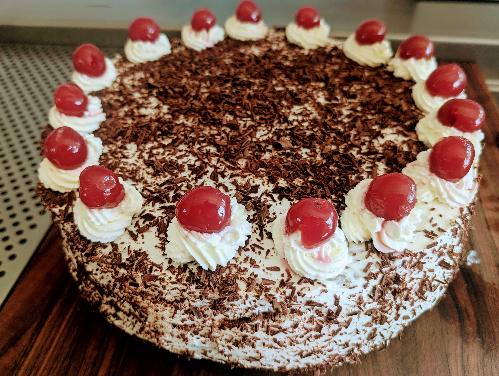

|  | |
| 85g | butter |
| 65g | sugar |
| 1 | egg yolk |
| 140g | flour |
| ◇ | |
| 7 | eggs (400g) |
| 250g | sugar |
| 3g | salt |
| ½ tsp | vanilla extract |
| 150g | flour |
| 50g | corn starch |
| 50g | cocoa powder |
| 60g | melted butter |
| ◇ | |
| 700g | sour cherries |
| 75g | sugar |
| 45g | corn starch |
| cinnamon | |
| ◇ | |
| 100g | sugar |
| 100ml | water |
| 50ml | cherry juice |
| ◇ | |
| 750g | heavy cream |
| 50g | sugar |
| 50ml | cherry juice |
| 3ml | rhubarb bitters |
| 8g | gelatin |
| ◇ | |
| 70g | fruit preserves |
| ◇ | |
| 400g | heavy cream |
| 100g | dark chocolate, grated |
| maraschino cherries | |
Preheat oven to 350°F (175°C).
Soften butter and whisk with sugar until creamy. Add egg yolk until well combined. Add flour and mix slowly. Chill until firm enough to roll out. Fill into the bottom of a 26cm (10") round form lined with parchment paper. Bake for about 15min until golden brown. Set aside.
Increase oven temperature to 375°F (190°C).
Whisk eggs, sugar, salt and vanilla extract. Combine flour, corn starch and cocoa powder and gently fold under the eggs. Finally add the melted butter and slowly whisk until combined.
Add the batter to three or four baking forms and bake until set, about 20min. Set aside.
Drain cherries and preserve liquids. Set aside 100ml of liquids for the cream filling and the syrup. Add sugar and cinnamon to taste to the remaining juice, bring to a boil then thicken with a cornstarch slurry. Add cherries back into the thickened syrup, and chill in the refrigerator.
Use half of the preserved liquids to make a simple syrup.
Sprinkle gelatin over other half of preserved liquids and soften in microwave. Add some heavy cream to temper. Then combine with rest of heavy cream, and rhubarb bitters. Whip until firm, adding sugar at the end.
Place cake bottom into a spring form, spread fruit preserves, then place first layer on top. Soak with ½ or ⅓ of the syrup depending on number of layers being used. Add cherry filling and stabilized cream. Repeat for remaining layer(s). Then place final layer on top.
Whip remaining heavy cream, remove cake from spring form, and coat on all sides with cream. Grate chocolate and sprinkle over cream. Decorate with piped cream and maraschino cherries.
Refrigerate before serving.